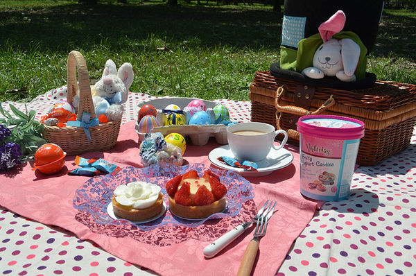

野餐怎麼玩
準備好去野餐了嗎？
出發之前，記得檢查一下野餐必備物品是否都帶在身邊了：
吃喝類
•方便攜帶的食物
•飲用水
•讓氣氛熱絡的啤酒/紅白酒
•果汁或其他飲料
野餐必備
•野餐籃
•野餐墊
•花色取勝的杯盤
•保冰桶 / 袋
穿戴用品
•墨鏡
•帽子
最重要的
•家人&好朋友數個
•毛小孩
•快樂的野餐心情
增加樂趣
•創意的野餐主題
•風箏 / 飛盤
•撲克牌 / 桌遊
其他
•衛生紙/濕紙巾
•垃圾袋
•防蚊液
•防曬用品
•遮陽物品
•相機
•行動電源
小提醒：奶類肉類食材的話，記得一定要裝在冰桶裡喔！有冰塊的話更好！
創意野餐主題
如果覺得單純的野餐太無趣，那就來點造型的搭配吧！
動物風、黑白風、豪華風的佈置，
會讓整個野餐更添樂趣！
缺乏靈感的話，來看看以下的野餐達人們是怎麼打造他們的創意主題野餐！
更多風格請參考Duma Bear 小小世界 野餐趣
日式新年風
White Picnic白色野餐派對
復古野餐
花花草草嬉皮風
夏日爵士派對
歐洲古董風生日野餐

復活節野餐
夢幻野餐